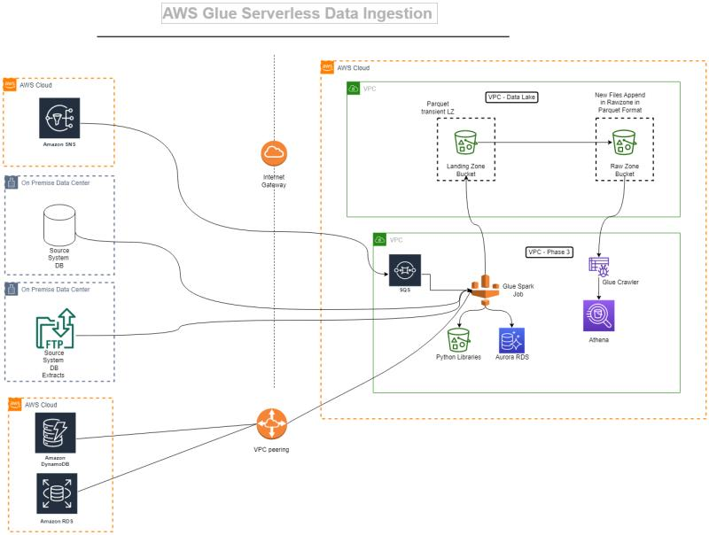

I am an experienced Lead Data Engineer with 6+ years of success designing scalable cloud-based Data Lakes and Warehouses using AWS, Snowflake, and PySpark. I specialize in building metadata-driven ingestion frameworks, implementing DevOps pipelines (Azure & AWS), and leading high-performing data engineering teams.
With a dedicated and energetic mindset, I bring a purpose-driven approach to the science of data, cloud architecture, and Agile project delivery. I’ve led multiple IT modernization and system integration initiatives, delivering robust, scalable solutions in fast-paced environments.
My expertise includes research, design, development, testing, and deployment of end-to-end data platforms. I’m passionate about writing clean, maintainable code and collaborating within cross-functional teams. I have strong communication skills, hands-on knowledge of modern data tools, and a deep understanding of data modeling and pipeline architecture.
Known for working with minimal supervision, I thrive in solving business challenges through innovative technical strategies that bridge the gap between engineering and business goals—always keeping the big picture in mind.
Automated external table creation and PII masking on AWS + Snowflake.
Upload, transform, and load Excel/CSV into Snowflake.

Implemented using EventBridge, S3, SNS, and Lambda.

You can reach me at prasad21121996@gmail.com or via LinkedIn. I'm happy to connect!